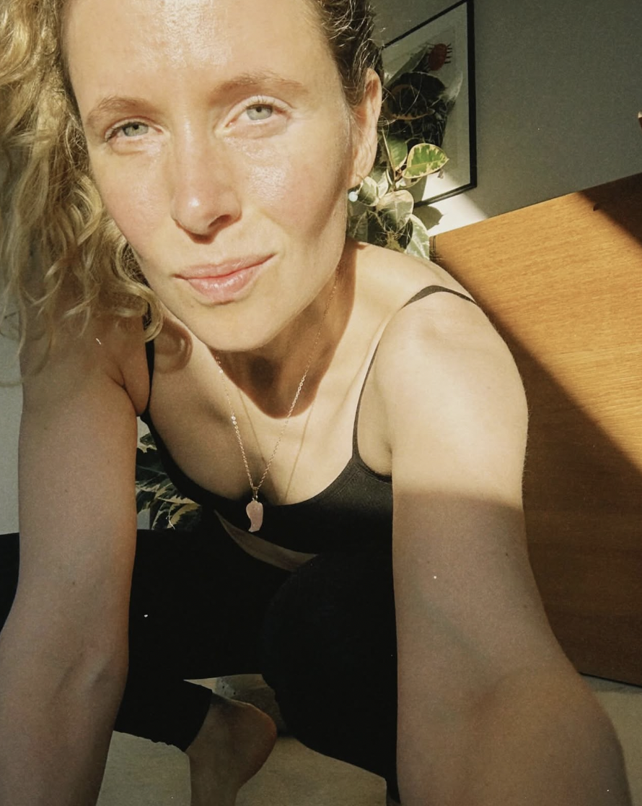

The Practice CPH
Et nordisk univers skabt til mennesker der længes efter mere forbindelse — til kroppen, til naturen og til sig selv

Kia — The Practice CPH
Om mig
The Practice opstod fra en personlig rejse — og en dyb overbevisning om at mennesker har brug for rum til at mærke sig selv.
Vi lever i en kultur præget af tempo, præstation og konstant stimulering. Mange mærker en længsel. Efter noget mere ægte. Mere enkelt. Mere levende.
The Practice er svaret på den længsel.
Vi skaber oplevelser, ritualer og praksisser der hjælper kroppen og nervesystemet med at finde vej tilbage til ro og forbindelse. Yoga, åndedræt, lyd og meditation er vores redskaber — men universet er større end metoderne.
The Practice er grundlagt af Kia Hartelius — mor, iværksætter og menneske på sin egen rejse hjem.
Kom som du er. Vi finder vejen hjem sammen. — Kia